Triggering the Safari Reader
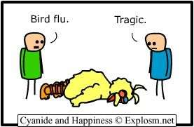 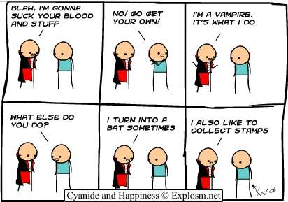 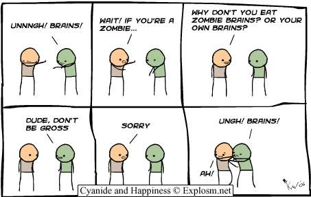
|
Some Advertisements 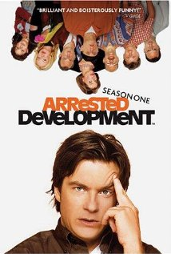 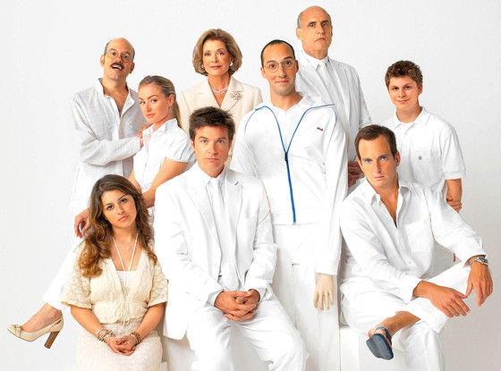 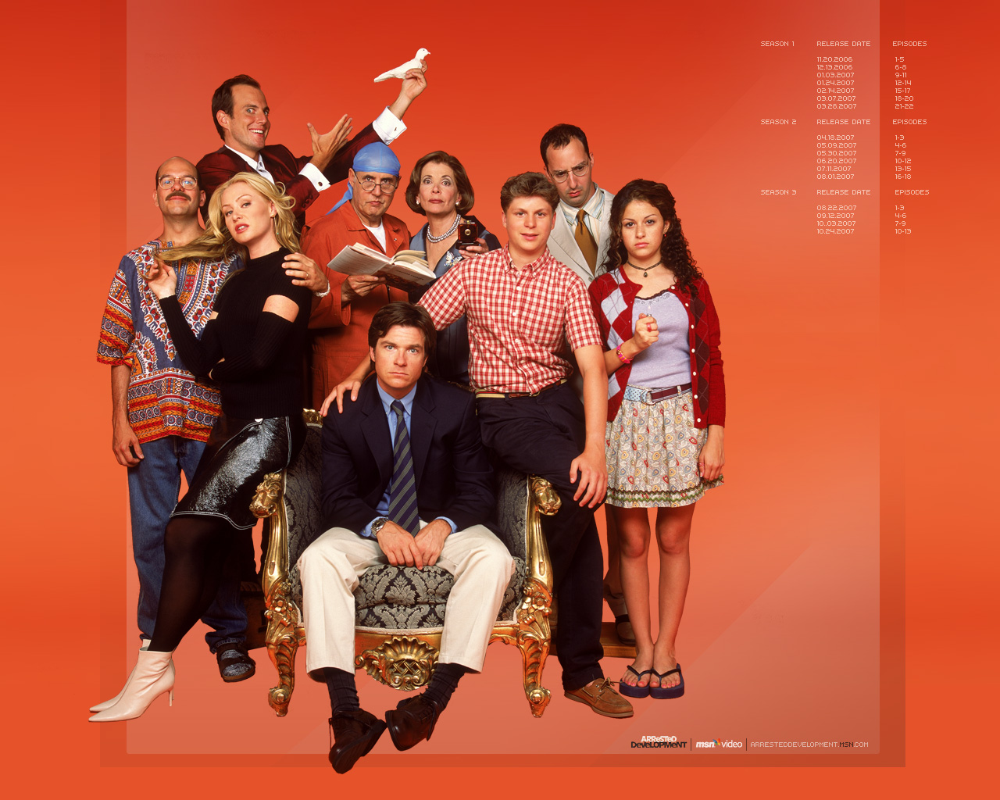 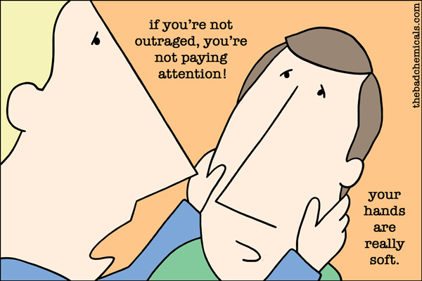 Like Arrested Development on Facebook! Like Arrested Development on Facebook! Like Arrested Development on Facebook! Like Arrested Development on Facebook!Comics 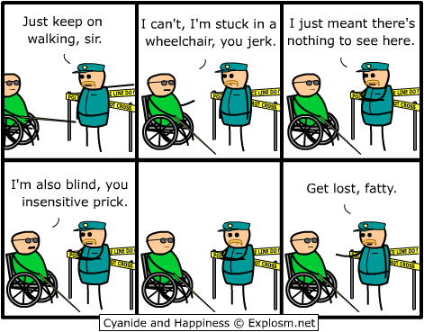 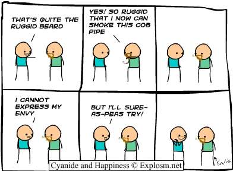 More Comics 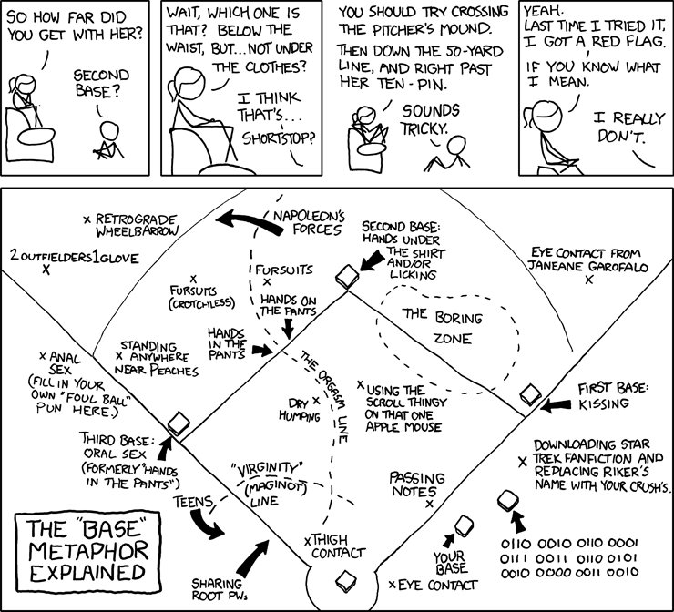
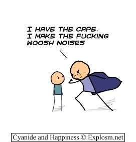 More Ads for the show
|
Arrested Developmentcourtesy of Wikipedia Arrested Development is an American television sitcom created by Mitchell Hurwitz.
The series aired for three seasons on the Fox network from 2003 to 2006, with new episodes
planned for release on Netflix in 2013. The show centers on the Bluth family, a formerly
wealthy and habitually dysfunctional family, and is presented in a continuous format,
incorporating hand-held camera work, narration, archival photos, and historical footage.
Ron Howard serves as an executive producer and the series' uncredited narrator.
Set in Newport Beach, California, Arrested Development is primarily filmed in Culver City
and Marina del Rey. Conception
Discussion that led to the creation of the series began in the summer of 2002. Ron Howard had the original idea to create a comedy series in the style of handheld cameras and reality television, but with an elaborate, highly comical script resulting from repeated rewritings and rehearsals. Howard met with David Nevins, the President of Imagine Television, Katie O'Connell, a senior vice president, and two writers, including Mitchell Hurwitz. In light of recent corporate accounting scandals, such as Enron and Adelphia, Hurwitz suggested a story about a "riches to rags" family. Howard and Imagine were immediately interested in using this idea, and signed Hurwitz to write the show. The idea was pitched and sold in the fall of 2002. Over the next few months, Hurwitz developed the characters and plot for the series. The script of the pilot episode was submitted in January 2003 and filmed in March 2003. It was submitted in late April to Fox and was added to the network's fall schedule that May. Casting
Alia Shawkat was the first actress to be cast in the series. Michael Cera, Tony Hale, and Jessica Walter were cast from video tapes and flown in to audition for Fox. Jason Bateman and Portia de Rossi both read and auditioned for the network and were immediately chosen. The character of Gob was apparently the most challenging to cast. When Will Arnett auditioned, he depicted the character "like a guy who thought of himself as the chosen son even though it was obvious to everyone else that he was the least favorite," where all others played it differently; he was chosen immediately for his unique portrayal. The characters of Tobias and George Sr. were originally going to have minor roles, but David Cross' and Jeffrey Tambor's portrayals mixed well with the rest of the characters, and they were given more significant parts. Howard provided the narration for the initial pilot but meshed so well with the tone of the program that the decision was made to stick with his voice. Howard also aided in the casting of "Lucille 2"; the producers told him that their dream actress for the role would be Liza Minnelli but assumed nobody of her stature would take the part. However, she agreed when Ron Howard asked her himself, because they were old friends; she had been his babysitter when he was a child and she was a teen. Production Design
Arrested Development uses several elements that are rare for American live-action sitcoms. Technically, Arrested Development was shot on location and on videotape with multiple cameras, parodying tactics often employed in documentary film and reality television, straying from the "fixed-set, studio audience, laugh track style long dominant in comedy production." The show also makes heavy use of cutaway gags, supplementing the narrative with visual punchlines like security camera footage, Bluth family photos, website screenshots, archive films, and flashbacks. An omniscient third-person narrator (producer Ron Howard) ties together the multiple plot threads running through each episode, while humorously undercutting and commenting on the characters. Further, Arrested Development also developed a unique self-referentiality through use of in jokes that evolved over multiple episodes, which rewarded longtime viewership (and in turn may have discouraged new viewers and contributed to the show's ratings issues). Lawsuit
In November 2003, the producers of the show were sued by the hip hop group Arrested Development over the alleged use of their name. Rapper "Speech" from the group said "The use of our name by Fox is not only confusing to the public, but also has the potential to significantly dilute what the 'Arrested Development' name means to our fans." The lawsuit was quietly settled for an undisclosed sum. The incident was referenced in the episode "Motherboy XXX." The narration refers to a band called "Motherboy," which the narration claims the show is "legally required to make a distinction" from, with respect to the "Motherboy" event happening in the episode. Cancellation and Revival
During the series' third season in 2006, despite months-long rumors of Arrested Development having been picked up by the cable television network Showtime, creator Hurwitz declined to move the show to another network. As Hurwitz explained, "I had taken it as far as I felt I could as a series. I told the story I wanted to tell, and we were getting to a point where I think a lot of the actors were ready to move on." He said that he was "more worried about letting down the fans in terms of the quality of the show dropping" than he was about disappointing fans by not giving them more episodes. He also said, "If there's a way to continue this in a form that's not weekly episodic series television, I'd be up for it." On October 2, 2011, the entire cast of Arrested Development reunited for a panel at The New Yorker Festival in New York. At the panel, Hurwitz nonetheless declared his intention of producing a truncated fourth season as a lead-in to a film adaptation. Six years after the series had been canceled by Fox, filming for a revived fourth season began on August 7, 2012. Fourteen episodes of the show's revival season are set to release simultaneously on Netflix in May 2013. Future film adaptationRumors of a possible full-length Arrested Development film circulated after the possibility was referenced in the show's final episode, "Development Arrested." Arrested Development: The Movie is currently awaiting the completion of the revived television series, with the script to be written by Hurwitz. In 2008, Howard was slated to direct the film, though it is not clear if he still is. Reportedly, all original members of the main cast are expected to reprise their original roles. |